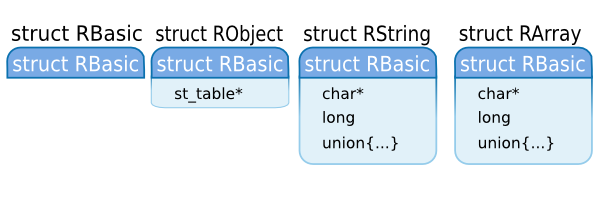
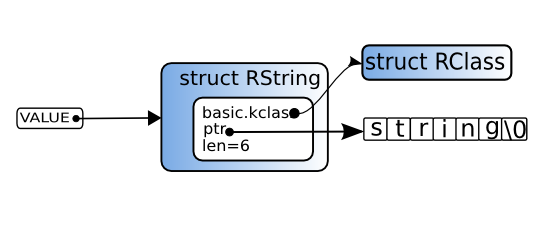
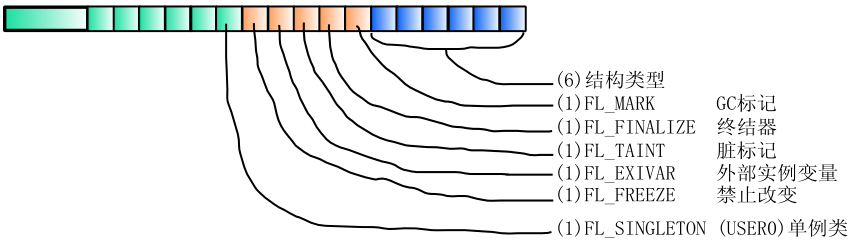
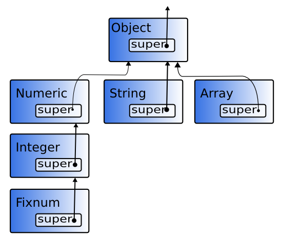
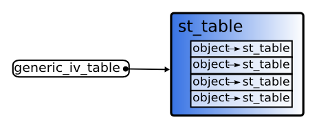
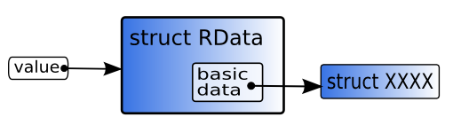

从本章起，我们开始ruby源代码的探索之旅，首先研究的是对象结构体的声明。
对象存在的必要条件是什么呢？我们可以给出许多解释，但事实上，有三个条件必须遵守：
在本章，我们将逐个确认这三个特性。
这次探索中最值得关注的文件是ruby.h，不过，我们也会简要的看一下其它文件，比如object.c, class.c或variable.c。
VALUE和对象结构体在ruby中，对象的内容表示为C的结构体，通常是以指针对其操作。每个类用一个不同的结构体表示，
但指针的类型都是VALUE（图1）。
图1: VALUE和结构体
这是VALUE的定义：
VALUE
71 typedef unsigned long VALUE; (ruby.h)
在实践中，VALUE必须转型为不同结构体类型的指针。 因此，如果unsigned long和指针大小不同，ruby会出现问题。
严格说来，在指针类型的大小大于sizeof(unsigned long)时才会出问题。
幸运的是，最近的机器没有这种问题，即便从前存在过相当多这样的机器。
下面几个结构体是对象类：
struct RObject |
下面之外的所有东西 |
struct RClass |
类对象 |
struct RFloat |
小数 |
struct RString |
字符串 |
struct RArray |
数组 |
struct RRegexp |
正则表达式 |
struct RHash |
hash表 |
struct RFile |
IO, File, Socket等等 |
struct RData |
所有定义在C层次上的类，除了上面提到的。 |
struct RStruct |
Ruby的Struct类 |
struct RBignum |
大的整数 |
比如，对于string对象，使用struct RString。所以，我们有类似于下面的东西。
图2: 字符串对象
让我们来看几个对象结构体的定义。
▼ 对象结构体的例子
/* 普通对象的结构体 */
295 struct RObject {
296 struct RBasic basic;
297 struct st_table *iv_tbl;
298 };
/* 字符串（String的实例）的结构体 */
314 struct RString {
315 struct RBasic basic;
316 long len;
317 char *ptr;
318 union {
319 long capa;
320 VALUE shared;
321 } aux;
322 };
/* 数组（Array的实例）的结构体 */
324 struct RArray {
325 struct RBasic basic;
326 long len;
327 union {
328 long capa;
329 VALUE shared;
330 } aux;
331 VALUE *ptr;
332 };
(ruby.h)
在详细探讨它们之前，我们先来看一些更通用的话题。
首先，VALUE定义为unsigned long，在使用之前必须进行转型。为此每个对象结构体都需要有个Rxxxx()宏。
比如说, 对struct RString来说是RSTRING(), 对struct RArray来说是RARRAY()，等等。这些宏的使用方式如下：
VALUE str = ....; VALUE arr = ....; RSTRING(str)->len; /* ((struct RString*)str)->len */ RARRAY(arr)->len; /* ((struct RArray*)arr)->len */
还有一点需要提及，所有的对象结构体中都是以basic成员开头，其类型是类型为struct RBasic。这样做的结果是，
无论VALUE指向何种类型的结构体，只要你将VALUE转型为struct RBasic*，你都可以访问到basic的内容。

图3: struct RBasic
你可能已经猜到了，struct RBasic的设计是为了包含由所有对象结构体共享的一些重要信息的。struct RBasic的定义如下：
struct RBasic
290 struct RBasic {
291 unsigned long flags;
292 VALUE klass;
293 };
(ruby.h)
flags 是个多目的的标记，大多用以记录结构体类型(比如，struct RObject)。
类型标记命名为 T_xxxx，可以使用宏 TYPE() 从 VALUE中获得。这是一个例子：
VALUE str; str = rb_str_new(); /* 创建Ruby字符串（其结构体是RString） */ TYPE(str); /* 返回值是T_STRING */
这些T_xxxx 标记的名字直接与其对应的类型名相关，如T_STRING 表示 struct RString、
T_ARRAY 表示 struct RArray。
struct RBasic的另一个成员，klass，包含了这个对象归属的类。
因为klass成员是VALUE类型, 它存储的是（一个指针指向）一个Ruby对象。
简言之，它是一个类对象。

图4: 对象和类
对象与其类之间的关系将在本章的《方法》一节详述。
顺便说一下，这个成员的名字不是 class ，这是为了保证文件由C++编译器处理不会造成冲突，
因为它是一个保留字。
我说过，结构体类型存储在struct Basic的flags成员里。但是，为什么我们要存储结构体的类型呢？
这样就可以通过 VALUE处理所有不同类型的结构。如果把结构体指针转型为VALUE，类型信息无法保留，
编译器无法提供任何帮助。因此我们不得不自己管理类型。这就是统一处理所有结构体类型的结果。
OK, 但是用到的结构体已经由类定义了，那么为什么结构体类型和类单独存储？ 能够从类中找到结构体类型应该就够了。有两个原因不这么做。
第一个原因是(很抱歉，与我之前所说内容有些矛盾)，实际上，
有的结构体中不包含struct RBasic（也就是说，它们没有klass成员）。
比如说，struct RNode，它会出现在本书的第二部分。 然而，即便是这样的特殊结构体，
flags也保证出现在起始成员的位置上。因此，如果你把结构体的类型放在flags中，
所有的对象结构体就可以用统一的方式进行区分了。
basic.flags的使用正如要限制我自己说，basic.flags用于不同的东西——包括结构体的类型——让我感觉很不好，
这是一个对它通用的阐述（图5）没有必要立刻理解所有的东西，我只是想展示一下它的使用，
虽然它让我很烦心。

图5: flags的使用
图中可以看出，好像在32位机器上有21位没有使用。对于这些额外的位，FL_USER0到FL_USER8已经定义，
用于每个结构体的不同目的。作为例子，我在图中设置了FL_USER0 (FL_SINGLETON) 。
VALUE中的对象如我所说，VALUE 是 unsigned long。因为VALUE是一个指针，看上去void*可能会好一些，
但是有一个不这么做的理由。实际上，VALUE也可能不是指针。在下面6个情况，VALUE就是不是指针：
truefalsenilQundef我来一个个解释一下。
因为在Ruby中，所有数据都是对象，所以，整数也是对象。然而，存在许多不同的整数实例， 把它们表示为结构体会冒减慢执行速度的的风险。比如说，从0递增到50000，仅仅如此就创建50000个对象， 这让我们感到犹豫。
这就是为什么在ruby中——某种程度上——小的整数要特殊对待，直接嵌入到VALUE中。
“小”意味着有符号整数，可以存放在sizeof(VALUE)*8-1位中。换句话说，在32位机器上，
整数有1位用于符号，30位用于整数部分。在这个范围内的整数都属于Fixnum类，其它的整数属于Bignum类
那么，让我们实际的看看INT2FIX()宏，它可以从C的int转换为Fixnum，
确保Fixnum直接嵌在VALUE中。
INT2FIX
123 #define INT2FIX(i) ((VALUE)(((long)(i))<<1 | FIXNUM_FLAG)) 122 #define FIXNUM_FLAG 0x01 (ruby.h)
简而言之，左移一位，按位与1或。
0110100001000 |
转换前 |
1101000010001 |
转换后 |
也就是说作为VALUE的Fixnum总是一个奇数。另一方面，因为Ruby对象结构体是以malloc()分配，
它们通常是安排在4的倍数的地址上，因此它们不会与作为VALUE的Fixnum的值重叠。
另外，为了将int或long转换为VALUE，我们可以使用宏，比如，INT2NUM()或LONG2NUM()。
任何转换宏XXXX2XXXX，若名字中包含NUM都可以管理Fixnum 和Bignum。
比如，如果INT2NUM()不能把整数转换为Fixnum，它会自动转换为Bignum。
NUM2INT()可以将Fixnum和Bignum转换为int。如果数字无法放入int，就会产生异常，
因此，不需要检查值的范围。
符号是什么？
这个问题回答起来很麻烦，还是让我们从符号存在的必要性开始吧！首先，我们先来看看用于ruby内部的ID。
它是这个样子：
ID
72 typedef unsigned long ID; (ruby.h)
这个ID是一个数字，与字符串有一对一的关联。然而，不可能为这个世界上的所有字符串和数字值之间建立关联。
因此将它们的关系限定为在Ruby进程内一对一。在下一章《名称与名称表》中，我会谈到查找ID的方法。
在语言实现中，有许多名称需要处理。方法名或变量名、常量名、类名中的文件名……把它们都当作字符串（char*）处理很麻烦。
因为内存管理和内存管理和内存管理……还有，肯定需要大量的比较，但是一个字符一个字符的比较字符串会降低执行速度。
这就是为什么不直接处理字符串，而用某些东西与其关联，作为替代。通常来说，“某些东西”就是整数，因为它们处理起来最简单。
在Ruby世界中，这些ID是作为符号使用的。直到ruby 1.4，这些ID都是被转换为Fixnum，却是作为符号使用。
时至今日，这些值仍可以使用Symbol#to_i获得。然而，随着实际使用逐渐增多，
越发认识到，Fixnum和Symbol相同并不是个好主意，因此，从1.6开始，创建一个独立的Symbol类。
Symbol对象用途很多，特别是作为hash表的键值。这就是为什么同Fixnum一样，Symbol存储在VALUE中。
让我们看看ID2SYM()这个宏，它将ID转换为Symbol对象。
ID2SYM
158 #define SYMBOL_FLAG 0x0e 160 #define ID2SYM(x) ((VALUE)(((long)(x))<<8|SYMBOL_FLAG)) (ruby.h)
左移8位，x乘了256，也就是4的倍数。然后，同0x0e（10进制的14）按位或（在这个情况下，它等同于加），
表示符号的VALUE不是4的倍数，也不是奇数。因此，它并不会与任何其它的VALUE的范围有重叠。相当聪明的技巧。
最后，让我们看看ID2SYM()的相反转换，SYM2ID()。
SYM2ID()
161 #define SYM2ID(x) RSHIFT((long)x,8) (ruby.h)
RSHIFT是向右位移。因为根据平台不同，右移可能对符号保持或取反，因此它做成一个宏。
true false nil有三个特殊的Ruby对象：true and false 代表boolean值，nil是一个用来表示“没有对象”的对象。
它们的值在C的层次上定义如下：
true false nil
164 #define Qfalse 0 /* Ruby's false */ 165 #define Qtrue 2 /* Ruby's true */ 166 #define Qnil 4 /* Ruby's nil */ (ruby.h)
这次它是偶数，但是0或2不能由指针使用，所以，它们不会和其它VALUE重叠。因为通常虚拟内存的第一个块是不分配的，
这样保证了程序不会因为反引用一个NULL指针而导致崩溃。
因为Qfalse是0，它可以在C层次上作为false使用。实际上，在ruby中，当函数需要返回一个boolean值时，
经常返回int或VALUE，或是返回Qtrue/Qfalse。
对于Qnil，有一个宏负责检查VALUE是否为Qnil，NIL_P()。
NIL_P()
170 #define NIL_P(v) ((VALUE)(v) == Qnil) (ruby.h)
名称以p结尾是一个来自Lisp的记法，它表示这是一个函数，返回boolean值。换句话说，
NIL_P表示“实参是否为nil”。看上去，“p”字符来自断言（“predicate”）。
这个命名规则在ruby中用到了许多不同的地方。
false和nil都是false，所有其它对象都是true。然而，在C中，nil (Qnil)代表
true.。这就是为什么在C中创建了一个Ruby风格的宏，RTEST()。
▼ RTEST()
169 #define RTEST(v) (((VALUE)(v) & ~Qnil) != 0) (ruby.h)
因为在Qnil中，只有第三低位为1，在~Qnil中，只有第三低位为0。
然后，只有Qfalse and Qnil按位与后为0。
加上!=0确保只有0或1，以满足glib库只要0或1的需求
([ruby-dev:11049]) 。
顺便说一下，Qnil“Q”是什么？“R”我可以理解，但为什么是“Q”
当我问了这个问题，答案是“因为Emacs是那样”。我没有得到我预期的有趣的答案……
QundefQundef
167 #define Qundef 6 /* undefined value for placeholder */ (ruby.h)
这个值用以在解释器中表示未定义的值。在Ruby的层次上，根本找不到它。
我已经总结过Ruby对象的三个重点：拥有标识，能够调用方法，持有每个实例的数据。 在本节中，我会以简单的方式解释一下同对象和方法相连的结构体。
struct RClass在Ruby中，执行期间类以对象的方式存在。当然，必须有一个类对象的结构体。这个结构体就是struct RClass。
它的结构体类型标志是T_CLASS。
因为类和模块极其相似，没有必要区分它们的内容。因此，模块也使用struct RClass结构体，通过T_MODULE结构体标志进行区分。
struct RClass
300 struct RClass {
301 struct RBasic basic;
302 struct st_table *iv_tbl;
303 struct st_table *m_tbl;
304 VALUE super;
305 };
(ruby.h)
首先，让我们关注一下m_tbl (方法表，Method TaBLe) 成员。struct st_table是一个在ruby中到处使用的hash表。
在下一章《名称与名称表》中，将会解释它的细节。但基本上，它就是一个将名字映射为对象的表。
在m_tbl中，持有这个类所拥有方法的名称（ID）与方法实体本身之间的对应关系。
如其名称所示，第四个成员super持有的是其超类。因为它是一个VALUE，它就是（一个指针，指向) 超类的类对象。
在Ruby中，只有一个类没有超类（根类）：Object。
然而，我已经说过，Object的所有方法都定义在Kernel模块中，Object只是包含了它。因为模块在功能类似与多重继承，
也许看上去拥有super好像有问题，但是在ruby中，做了一些聪明的变化，使它看上去像个单继承。
这个过程将在第四章《类和模块》中详细解释。
因为如此，Object结构体的super指向Kernel对象的struct RClass。只有Kernel的super才是NULL。
因此，与我说过的矛盾，如果 super是NULL，这个RClass是Kernel对象（图6）。

图6: C层次的类树
了解类结构体，你就可以轻松想出方法调用过程。搜索对象类的m_tbl，如果方法没有找到，就搜索super的m_tbl，等等。
如果不再有super，也就是说甚至在Object中都没有找到，那么一定是方法没有定义。
在m_tbl中进行顺序搜索过程由search_method()完成。
search_method()
256 static NODE*
257 search_method(klass, id, origin)
258 VALUE klass, *origin;
259 ID id;
260 {
261 NODE *body;
262
263 if (!klass) return 0;
264 while (!st_lookup(RCLASS(klass)->m_tbl, id, &body)) {
265 klass = RCLASS(klass)->super;
266 if (!klass) return 0;
267 }
268
269 if (origin) *origin = klass;
270 return body;
271 }
(eval.c)
这个函数在klass中搜索命名为id的方法。
RCLASS(value)是一个宏，如下：
((struct RClass*)(value))
st_lookup()是一个函数，它在st_table中搜索对应于一个键值的值。如果值找到了，函数返回true，
把找到的值放在由第三个参数（&body）指定的地址。
然而，无论在何种情况下，做这种搜索都太慢，所以实际中一旦方法调用就会缓存起来。因此从第二次开始，
它不会一个一个super的去找。这个cache及其搜索会在第15章《方法》中讲到。
在本节中，我会解释第三个本质条件的实现：实例变量。
rb_ivar_set()实例变量允许每个对象存储它特有的数据。把它存储在对象本身（也就是对象结构体中）看上去不错，
但是实际如何呢？让我们看一下函数rb_ivar_set()，它将对象放入实例变量中。
rb_ivar_set()
/* write val in the id instance of obj */
984 VALUE
985 rb_ivar_set(obj, id, val)
986 VALUE obj;
987 ID id;
988 VALUE val;
989 {
990 if (!OBJ_TAINTED(obj) && rb_safe_level() >= 4)
991 rb_raise(rb_eSecurityError,
"Insecure: can't modify instance variable");
992 if (OBJ_FROZEN(obj)) rb_error_frozen("object");
993 switch (TYPE(obj)) {
994 case T_OBJECT:
995 case T_CLASS:
996 case T_MODULE:
997 if (!ROBJECT(obj)->iv_tbl)
ROBJECT(obj)->iv_tbl = st_init_numtable();
998 st_insert(ROBJECT(obj)->iv_tbl, id, val);
999 break;
1000 default:
1001 generic_ivar_set(obj, id, val);
1002 break;
1003 }
1004 return val;
1005 }
(variable.c)
rb_raise()和rb_error_frozen()都用于错误检查。错误检查是必须的，但是它并非这个处理的主要部分，
因此你应该在第一次阅读中忽略它。
移除错误处理，就只剩下switch，但是这个
switch (TYPE(obj)) {
case T_aaaa:
case T_bbbb:
...
}
形式是ruby特色。TYPE()是一个宏，返回对象的结构体的类型标志（T_OBJECT，T_STRING，等等）。
换句话说，因为类型标志是一个整形常量，我们可以用一个switch依赖它进行分支处理。Fixnum和Symbol没有结构体，
但是在TYPE()内部，做了特殊处理，可以恰当的返回T_FIXNUM和T_SYMBOL，因此没有必要担心。
好了，让我们返回rb_ivar_set()。好像只是对T_OBJECT，T_CLASS和T_MODULE处理不同。
选中它们3个是因为它们的第二个参数是iv_tbl。让我们实际确认一下。
iv_tbl的结构体：
/* TYPE(val) == T_OBJECT */
295 struct RObject {
296 struct RBasic basic;
297 struct st_table *iv_tbl;
298 };
/* TYPE(val) == T_CLASS or T_MODULE */
300 struct RClass {
301 struct RBasic basic;
302 struct st_table *iv_tbl;
303 struct st_table *m_tbl;
304 VALUE super;
305 };
(ruby.h)
iv_tbl是一个实例变量表（Instance Variable TaBLe）。它存储着实例变量及其对应的值。
在rb_ivar_set()中，让我们在看一下有iv_tbl的结构体的代码。
if (!ROBJECT(obj)->iv_tbl)
ROBJECT(obj)->iv_tbl = st_init_numtable();
st_insert(ROBJECT(obj)->iv_tbl, id, val);
break;
ROBJECT()是一个宏，它将VALUE转型为struct RObject*。
obj有可能指向struct RClass，但是因为我们只是要访问第二个成员，这么做没什么问题。
st_init_numtable()是创建st_table。st_insert()完成在st_table中的关联。
总结一下，这段代码完成下面这些事：如果iv_tbl不存在，则创建它，然后存储一个[变量名 → 对象]的关联。
警告：因为struct RClass是一个类对象，这个实例变量表是用于类对象本身。在Ruby程序中，它对应于如下代码：
class C @ivar = "content" end
generic_ivar_set()对于结构体不是T_OBJECT，T_MODULE或T_CLASS的对象而言，修改实例变量会发生什么呢？
rb_ivar_set()：没有iv_tbl情况
1000 default: 1001 generic_ivar_set(obj, id, val); 1002 break; (variable.c)
控制交给了generic_ivar_set()。在看这个函数之前，让我们先解释其通用的想法。
非T_OBJECT，T_MODULE或T_CLASS的结构体没有iv_tbl成员（为何没有，稍后解释）。
然而，将实例同struct st_table连接起来的方法允许实例拥有实例变量。在ruby中，通过使用全局st_table解决这个问题。
generic_iv_table（图7）就是为这种关联准备的。

图7: generic_iv_table
让我们实际的看一下。
▼generic_ivar_set()
801 static st_table *generic_iv_tbl;
830 static void
831 generic_ivar_set(obj, id, val)
832 VALUE obj;
833 ID id;
834 VALUE val;
835 {
836 st_table *tbl;
837
/* for the time being you should ignore this */
838 if (rb_special_const_p(obj)) {
839 special_generic_ivar = 1;
840 }
/* initialize generic_iv_tbl if it does not exist */
841 if (!generic_iv_tbl) {
842 generic_iv_tbl = st_init_numtable();
843 }
844
/* the treatment itself */
845 if (!st_lookup(generic_iv_tbl, obj, &tbl)) {
846 FL_SET(obj, FL_EXIVAR);
847 tbl = st_init_numtable();
848 st_add_direct(generic_iv_tbl, obj, tbl);
849 st_add_direct(tbl, id, val);
850 return;
851 }
852 st_insert(tbl, id, val);
853 }
(variable.c)
当其参数不是指针时，rb_special_const_p()为true。然而，正因为如此，if部分需要垃圾搜集器的知识，
我们先跳过它。我想让你在读过了第五章《垃圾搜集》之后再来看它。
st_init_numtable()已经前面出现过了。它创建了一个新的hash表。
st_lookup()搜索与键值对应的值。在这里，它搜索附着在obj上的键值。如果所附的值找到了，整个函数返回true，
把值存储在第三个参数（&tbl）给定的地址中。简而言之，!st_lookup(...)可以读作“如果值没有找到”。
st_insert()也已经解释过了。它将一个新的关联存储到表中。
st_add_direct()类似于st_insert()，添加关联之前的部分有些不同，它要检查键值保存与否。换句话说，
对于st_add_direct()，如果注册的键值已经用到，那么连接到相同键值的两个关联都会保存。完成存在性检查后，
可以使用st_add_direct()，比如这里的例子，或是一个新表刚刚创建的时候。
FL_SET(obj, FL_EXIVAR)是个宏，它将obj的basic.flags设置为FL_EXIVAR。
basic.flags标志都是以FL_xxxx命名，可以使用FL_SET()进行设置。这些标志也可以使用FL_UNSET()取消。
FL_EXIVAR中的EXIVAR像是外部实例变量（EXternal Instance VARiable）缩写。
这样设置这些标志可以加速读实例变量的过程。如果没有设置FL_EXIVAR，即便不搜索generic_iv_tbl，
我们也直接知道是否对象拥有实例变量。当然，位检查是比搜索struct st_table要快。
现在，你该理解了实例变量是如何存储的，但是为什么有些没有iv_tbl？
为什么struct RString或struct RArray中没有iv_tbl呢？
难道iv_tbl不能是RBasic的一部分吗？
好的，可以这么做，但是有一些很好的理由不这么做。实际上，这个问题同ruby管理对象的方式紧密相连。
在ruby中，内存——比如字符串数据（char[]）用到的——可以直接使用malloc()分配。然而，对象结构体要以一种特殊的方式进行处理。
ruby以簇进行分配，然后从这些簇中将它们分配出来。因为在分配时结构体的类型（和大小）差异难于处理，所以，声明了一个组合了所有结构体的类型（union）RVALUE，
管理的是这个类型的数组。因为这个类型的大小等于其成员的最大一个，如果只要有一个大的结构体，就会有很多未用的空间。
这就是为什么要尽可能把结构体重新组织为类似大小。RVALUE的细节会在第五章《垃圾搜集》中解释。
通常，用的最多的结构体是struct RString。之后，在程序中，是struct RArray （数组），RHash （hash），
RObject （用户定义对象）等等。然而，这个struct RObject只使用struct RBasic + 1个指针的空间。另一方面，
struct RString，RArray和RHash占用struct RBasic + 3个指针的空间。换句话说，
当把struct RObject放入共享实体中，两个指针的空间没有用到。此外，如果RString有4个指针，
RObject使用的大小少于共享实体一半。如你预期，浪费。
因此，公认的iv_tbl价值在于或多或少节省内存并且加速。此外，我们不知道它是否常用。事实上，ruby 1.2
之前并没有generic_iv_tbl，因此，那时不可能在String或Array中使用实例变量。然而，这并不是什么问题。
只是为了功能让大量内存处于无用状态看上去有些愚蠢。
如果你把这些都考虑了，你就可以推断，增加对象结构体的大小不会有任何好处。
rb_ivar_get()我们看过了设置变量的rb_ivar_set()函数，那我们在快速看看如何得到它们。
rb_ivar_get()
960 VALUE
961 rb_ivar_get(obj, id)
962 VALUE obj;
963 ID id;
964 {
965 VALUE val;
966
967 switch (TYPE(obj)) {
/* (A) */
968 case T_OBJECT:
969 case T_CLASS:
970 case T_MODULE:
971 if (ROBJECT(obj)->iv_tbl &&
st_lookup(ROBJECT(obj)->iv_tbl, id, &val))
972 return val;
973 break;
/* (B) */
974 default:
975 if (FL_TEST(obj, FL_EXIVAR) || rb_special_const_p(obj))
976 return generic_ivar_get(obj, id);
977 break;
978 }
/* (C) */
979 rb_warning("instance variable %s not initialized", rb_id2name(id));
980
981 return Qnil;
982 }
(variable.c)
结构完全相同。
（A）对于struct RObject或RClass，我们在iv_tbl中搜索变量。因为iv_tbl也可能为NULL，
在使用之前必须检查。然后，如果st_lookup()找到关系，它返回true，因此整个if可以读作“如果设置了实例变量，返回其值”。
（C）如果没有对应，换句话说，如果我们读一个没有设置的实例变量，我们先离开if，然后是switch。
rb_warning()提出警告，返回nil。这是因为在Ruby中你可以读取未设置的实例变量。
（B）另一方面，如果结构体既不是struct RObject也不是RClass，在generic_iv_tbl中，搜索实例变量表。
generic_ivar_get()做什么应该可以很容易猜出来，因此我就不解释它了。我更愿意让你关注if。
我已经告诉你了，generic_ivar_set()设置FL_EXIVAR标志可以让检查更快。
rb_special_const_p()是什么呢？当其参数obj不指向结构体时，这个函数返回true。
因为没有结构体意味着没有basic.flags，没有可以设置的标志，FL_xxxx()总会返回false。
所以，这些对象需要特殊对待。
在本节中，我们会简单看一下对象结构体中几个重要的结构体的内容及其处理。
struct RStringstruct RString是String及其子类实例的结构体。
struct RString
314 struct RString {
315 struct RBasic basic;
316 long len;
317 char *ptr;
318 union {
319 long capa;
320 VALUE shared;
321 } aux;
322 };
(ruby.h)
ptr是一个字符串指针，len是字符串的长度。非常直接。
同通常的字符串相比，Ruby的字符串更像一个字节数组，其中可以容纳任何字节，包括NUL。
因此在Ruby的层次思考时，以NUL 结尾的字符串并不代表任何东西。因为C函数需要NUL，为方便就有了结尾NUL，
然而，它并不包括len。
在解释器或扩展库中处理字符串时，你可以写RSTRING(str)->ptr或RSTRING(str)->len，
以访问ptr和len。但是有一些需要注意的点。
str真的指向一个struct RStringRSTRING(str)->ptr存储在类似于局部变量的东西中以待后续使用。为何如此？首先，有一个重要的软件工程原则：不要乱动别人的数据。接口函数就为这个原因而存在的。然而，在ruby的设计中，
还有其它一些具体的原因不能去查询或存储一个指针，这与第四个成员aux相关。为了解释如何恰当使用aux，
我们先要就Ruby字符串的一些特征多说两句。
Ruby的字符串可以修改（可变的）。我说的可变是下面这样：
s = "str" # 创建一个字符串，赋值给s
s.concat("ing") # 给这个字符串对象添加“ing”
p(s) # 显示这个字符串
s指向对象的内容会变成“string”。它不同于Java或Python的字符串对象，和Java的StringBuffer更接近一些。
这是什么关系？首先，可变意味着字符串的长度（len）可以改变。我们需要每次根据长度的变换增减已分配的内存。
我们当然可以用realloc()来实现，但通常malloc()和realloc()都是重量级的操作。
每当字符串变化就realloc()会是一个沉重的负担。
这就是为什么ptr指向的内存大小要略大于len。因为如此，如果添加的部分如何能放到剩余的内存中，
无需调用realloc()便能得到处理，这会更快一些。结构体成员aux.capa是一个长度，它包括额外的内存。
那么另一个aux.shared是什么？它用以加速文本字符串的创建。看看下面的Ruby程序。
while true do # 无限重复
a = "str" # 以“str”为内容创建字符串，赋值给a
a.concat("ing") # 为a所指向的对象添加“ing”
p(a) # 显示“string”
end
无论你循环多少次，第四行的p都会显示"string"。所以，代码"str"需要每次创建一个字符串对象以持有一个不同的char[]。
然而，如果有大量相同的字符串，创建多次char[]的拷贝是没有意义的。最好共享一个通用的char[]。
这个技巧运用的根源就在aux.shared。以文本常量创建的字符串会使用一个共享的char[]。当发生变化时，
将字符串复制到一个非共享的内存中，变化针对对这个新拷贝进行。这一技术成为“写时拷贝”。当使用共享char[]时，
对象结构体的basic.flags设置为ELTS_SHARED，aux.shared包含原有的对象。ELTS好像是ELemenTS的缩写。
好的，但是，让我们回到RSTRING(str)->ptr的话题上。即便可以访问指针，你也不该修改它，首先，
这会导致len或capa的值会与内容不一致，再有，当修改的字符串是通过文本常量创建的话，aux.shared需要分离出来。
为了结束这个关于RString章节，让我们写几个如何使用它的例子。str是一个VALUE，它指向RString。
RSTRING(str)->len; /* 长度 */
RSTRING(str)->ptr[0]; /* 第一个字符 */
str = rb_str_new("content", 7); /* 创建一个以“content”为内容的字符串
第二个参数是长度 */
str = rb_str_new2("content"); /* 创建一个以“content”为内容的字符串
其长度由strlen()计算 */
rb_str_cat2(str, "end"); /* 连接C字符串到Ruby字符串上 */
struct RArraystruct RArray是Ruby数组类Array的结构体。
struct RArray
324 struct RArray {
325 struct RBasic basic;
326 long len;
327 union {
328 long capa;
329 VALUE shared;
330 } aux;
331 VALUE *ptr;
332 };
(ruby.h)
除了ptr的类型，这个结构体几乎等同于struct RString。ptr指向数组的内容，len是其长度。
aux的用途等同于struct RString。aux.capa是ptr所指向内存的真正长度。
如果ptr是共享的，aux.shared存储着共享的原数组对象。
从这个结构体可以清楚的看出，Ruby的Array是一个数组，而非列表。因此，当元素数目发生很大变化时，必须进行realloc()。
如果元素需要插入到其它的地方，而非尾端，就要用到memmove()。但是如果我们这么做了，即便它移动得也很快，在当前的机器上，
它依然会给人留下深刻的印象。
这就是为什么访问它的方式类似于RString。你可以访问RARRAY(arr)->ptr和RARRAY(arr)->len成员，
但不能设置它们等等。我们只看些简单的例子：
/* 在C中管理数组 */ VALUE ary; ary = rb_ary_new(); /* 创建一个空数组 */ rb_ary_push(ary, INT2FIX(9)); /* 推入一个Ruby的9 */ RARRAY(ary)->ptr[0]; /* 查看索引0位置是什么 */ rb_p(RARRAY(ary)->ptr[0]); /* 对ary[0]做p （结果是9） */ # 在Ruby中管理数组 ary = [] # 创建一个空数组 ary.push(9) # 推入9 ary[0] # 查看索引0位置是什么 p(ary[0]) # 对ary[0]做p （结果是9）
struct RRegexp它是正则表达式类Regexp实例的结构体。
struct RRegexp
334 struct RRegexp {
335 struct RBasic basic;
336 struct re_pattern_buffer *ptr;
337 long len;
338 char *str;
339 };
(ruby.h)
ptr是编译后的正则表达式。str是编译前的字符串（正则表达式的源代码），len是这个字符串的长度。
因为本书未涉及Regexp对象处理的代码，我们就不谈如何使用它了。即使你在扩展库中用到它，
只要你不想以非常特别的方式使用，接口函数足矣。
struct RHashstruct RHash是Ruby中Hash对象的结构体。
struct RHash
341 struct RHash {
342 struct RBasic basic;
343 struct st_table *tbl;
344 int iter_lev;
345 VALUE ifnone;
346 };
(ruby.h)
它是对struct st_table的封装。st_table会在下一章《名称与名称表》中详述。
ifnone是键值没有对应附着值时的值，缺省为nil。iter_lev保证了hash表可重入（多线程安全）。
struct RFilestruct RFile是内建的IO类及其子类实例的结构体。
struct RFile
348 struct RFile {
349 struct RBasic basic;
350 struct OpenFile *fptr;
351 };
(ruby.h)
▼ OpenFile
19 typedef struct OpenFile {
20 FILE *f; /* stdio ptr for read/write */
21 FILE *f2; /* additional ptr for rw pipes */
22 int mode; /* mode flags */
23 int pid; /* child's pid (for pipes) */
24 int lineno; /* number of lines read */
25 char *path; /* pathname for file */
26 void (*finalize) _((struct OpenFile*)); /* finalize proc */
27 } OpenFile;
(rubyio.h)
所有的成员都转到了struct OpenFile中。因为没有太多的IO实例，这么做也可以。各个成员的目的都写在注释中了。
基本上，它就是C的stdio的封装。
struct RDatastruct RData同我们之前所见有着不同的思路。它是扩展库实现的结构体。
当然，创建扩展库类的结构体是必需的，但是这些结构体的类型依赖于已创建的类，不可能预先知道它们的大小或结构体。
所以要在ruby端创建一个“管理用户自定义结构体指针的结构体”，以实现管理。这个结构体就是struct RData。
struct RData
353 struct RData {
354 struct RBasic basic;
355 void (*dmark) _((void*));
356 void (*dfree) _((void*));
357 void *data;
358 };
(ruby.h)
data是一个指向用户自定义结构体的指针，dfree是用以释放这个结构体的函数，dmark也是一个函数，当发生标记和清除的“标记”时调用。
现在解释struct RData依然太复杂，我们暂时只是看看它的表示（图8）。在第五章《垃圾回收》中会再谈到它，
在那你会读到更多关于其成员详细的解释。

图8: struct RData的表示